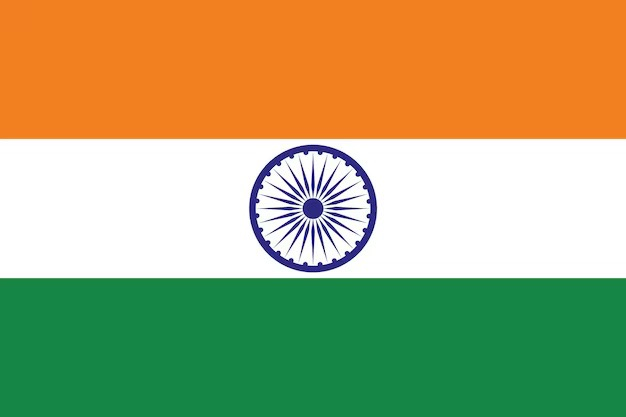

About Me
My name is Samson and I go by Sam. I was born in India and live with my family in Tamil Nadu. I am currently working as an Computer Engineer at a IT Company. My children are my world, and I love spending time with them. I love to travel and learn new things.

Tamil Nadu, India

Tamil Nadu, located in southern India, boasts the longest coastline among Indian states along the Bay of Bengal, stretching approximately 1,076 kilometers (669 miles). Tamil Nadu's capital, Chennai, is a major port city and home to Marina Beach, the second-longest urban beach in the world.